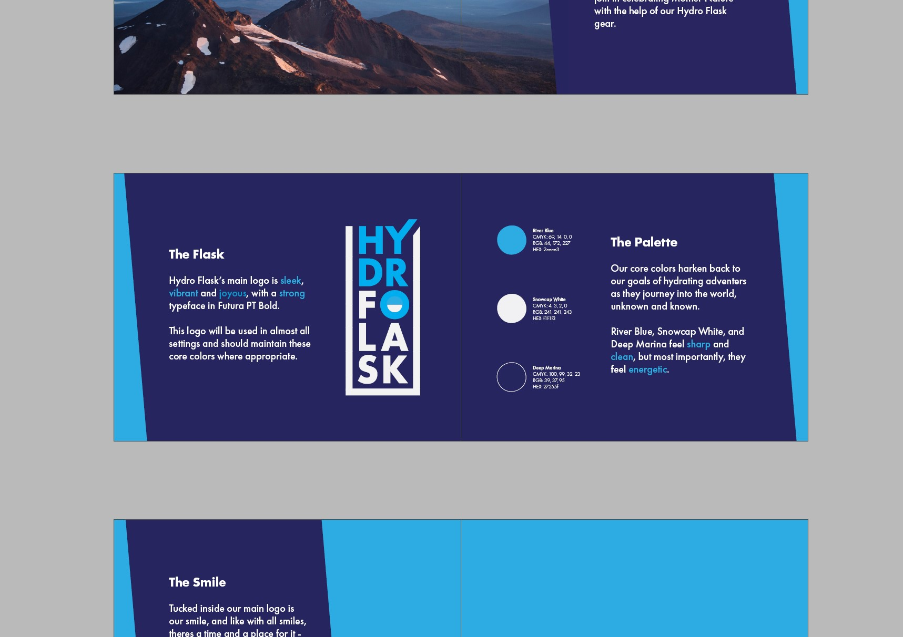
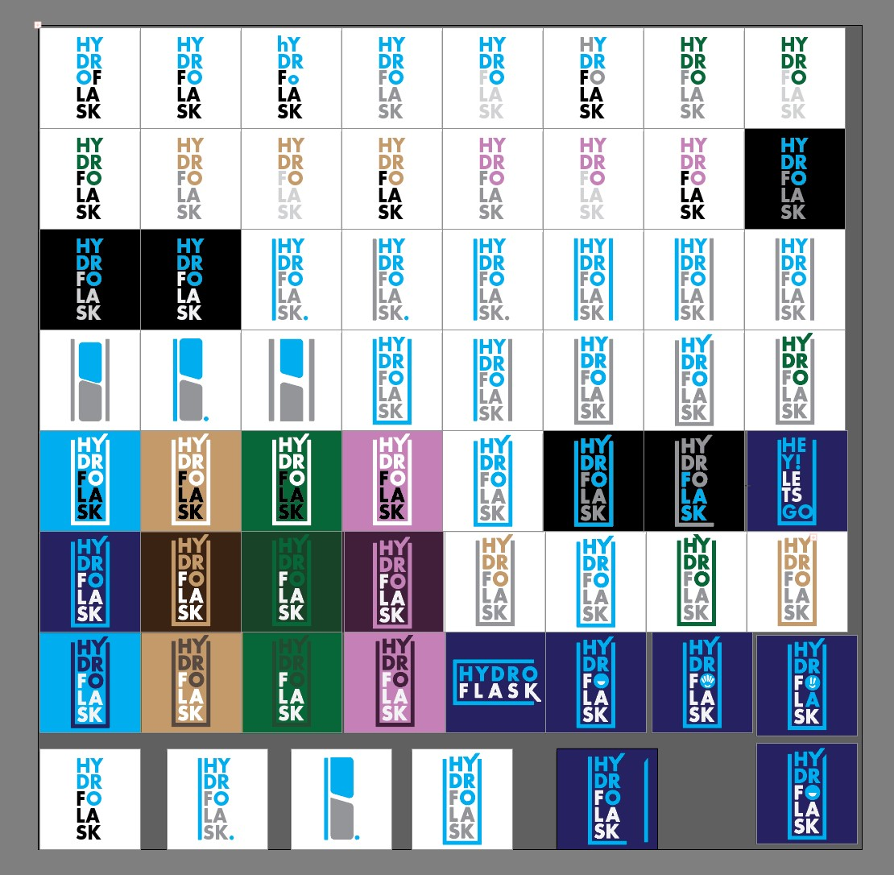
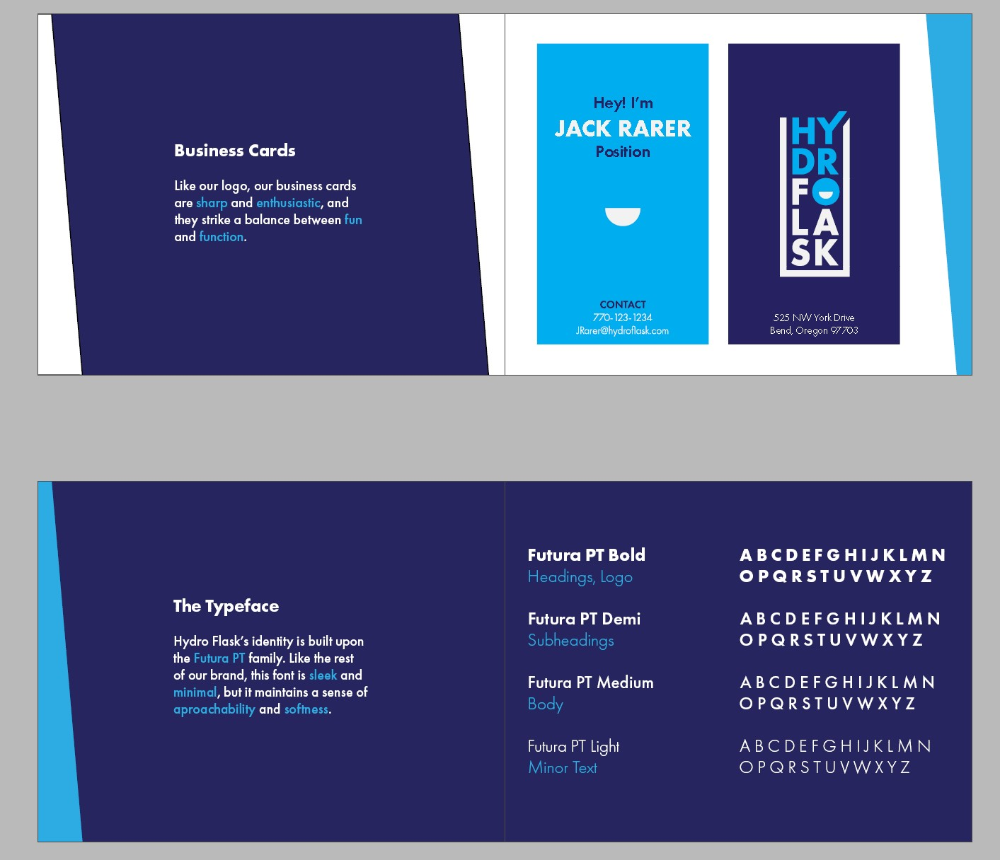

Visual Rebranding
Visual Mastery
As a cumulative final project for LMC2720, Principles of Visual Design, I was tasked with completely rebranding a company of my choosing. More than any other project this semester, this final put my affinity for visual design to the test in the most demanding and rewarding project of the year.

Starting from Scratch (kinda)
The main crux of the assignment was that everything had to be completely my own work. The logo, the color palette, the fonts, the general design language. All of it was new. With that being said, part of the assignment was being able to create new works with the same intent as the brand's previous work. I had to stay true to their goals, but I had to take a new approach.

Trial and Error and Error
I say this was the most time consuming project of the semester not because of how much content was required in the final project, but because of how much content I had to go through to get there. Iteration after iteration, I experimented with different concepts for the brand redesign. Dozens of logos, dozens of fonts, dozens of colors. This was annoying in the moment, but practicing iteration is honestly the best exercise in any field, and I'm glad I pushed myself in that direction.

The Tools
This project was also the most tool intensive work I've done. I bounced around between Adobe's Creative Cloud Suite to pull the pieces together. Logos were made in Illustrator. Promotional material was edited in Photoshop. Posters and the final brand guide were made in Indesign. The learnign curve was steep, but I now feel confident in using Creative Cloud for future projects, of which I am sure there will be many.